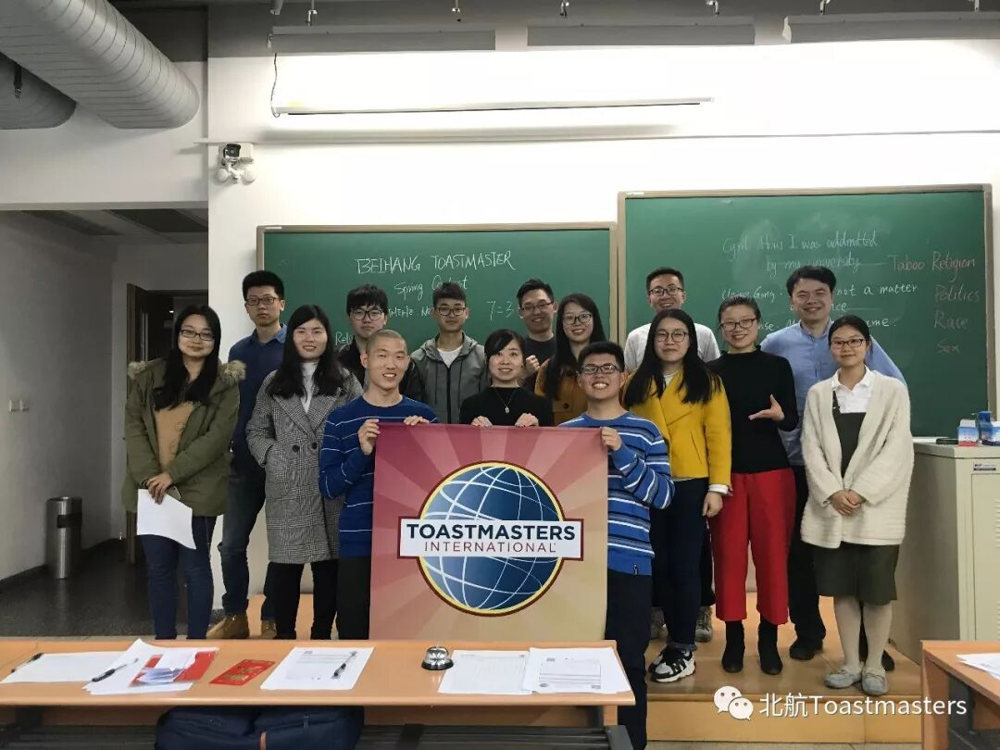
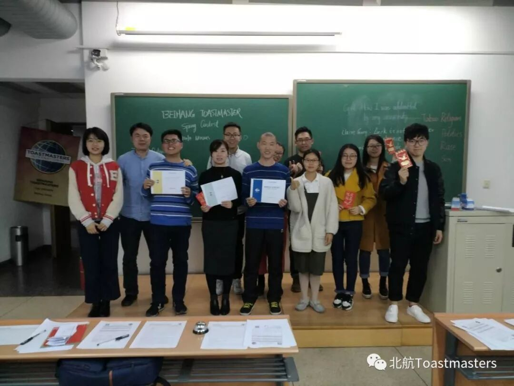
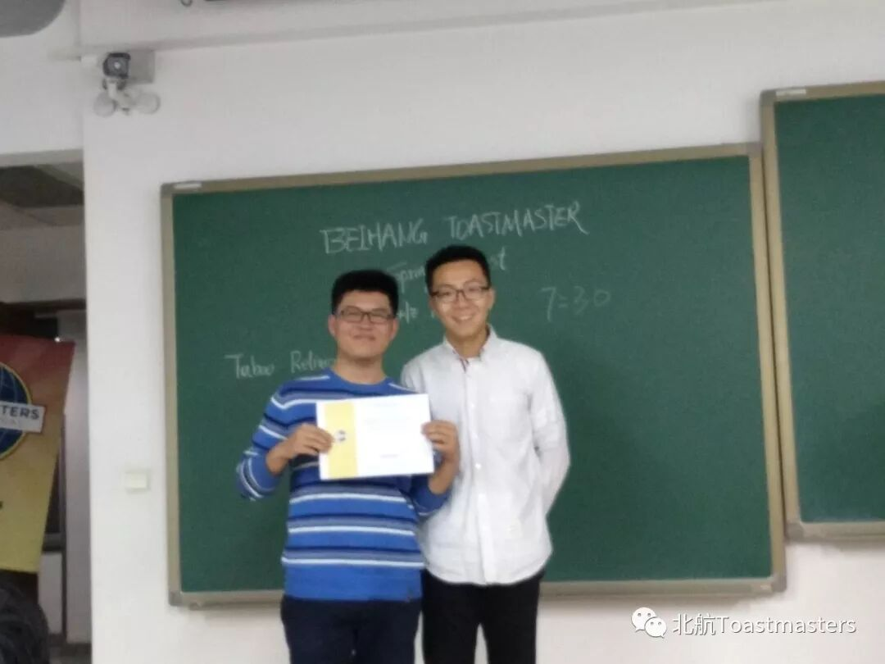
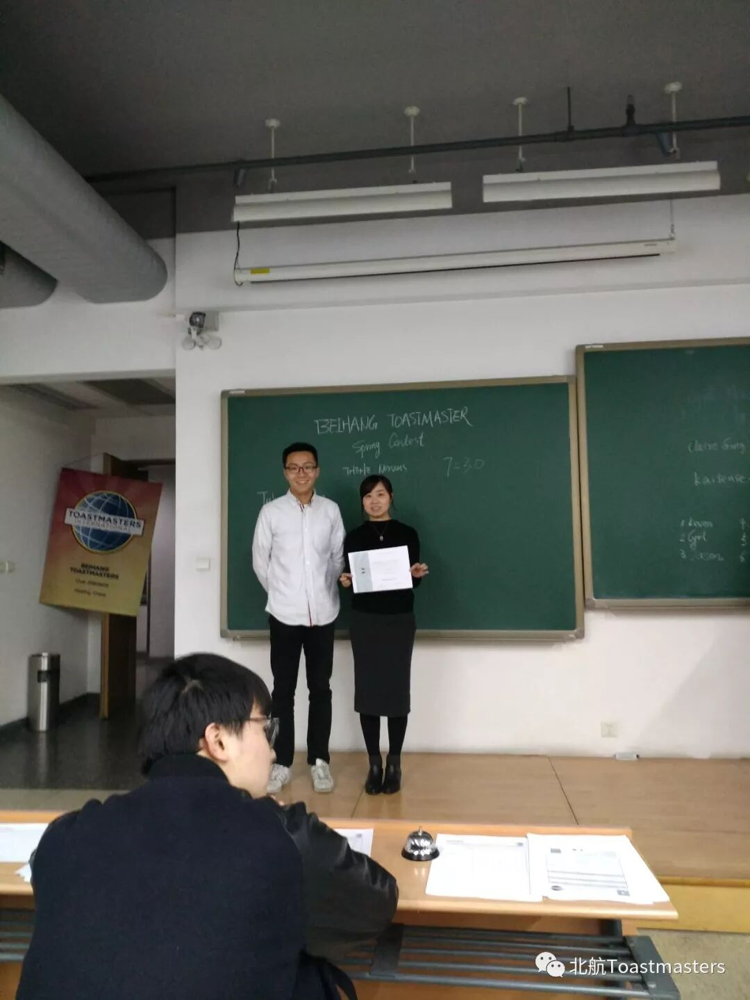
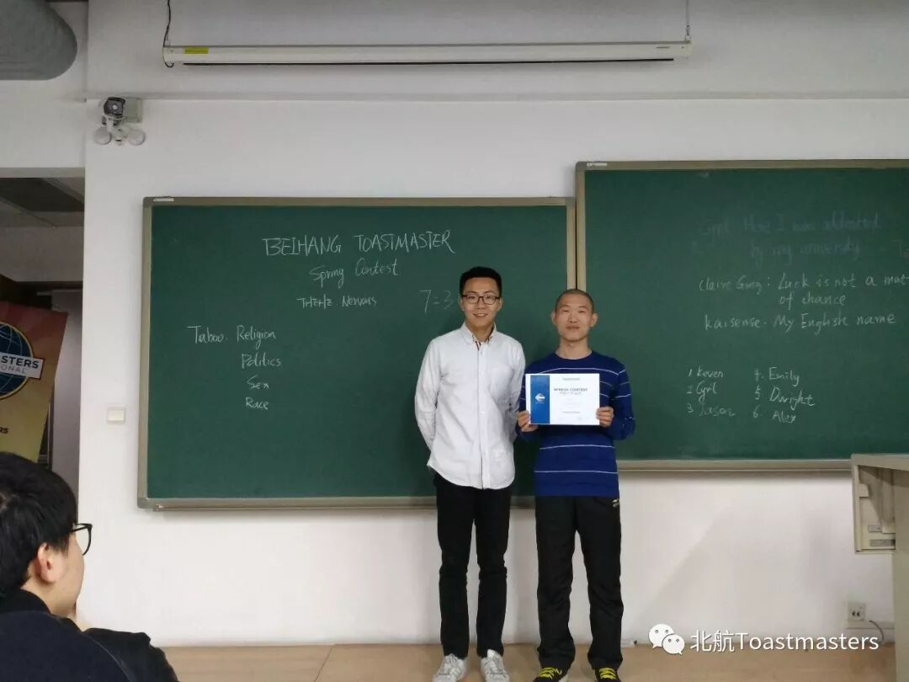
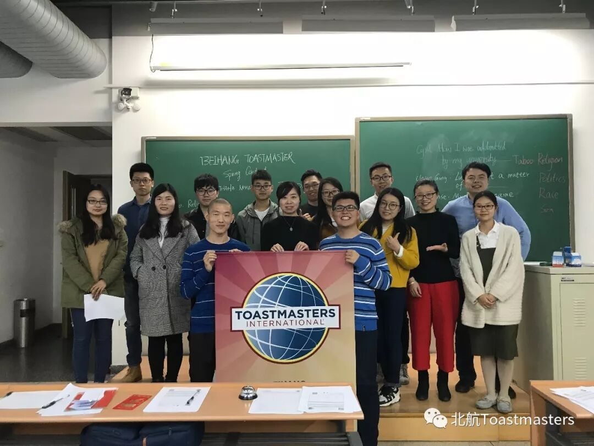

During the evening of 23 March, 2018, Beihang TMC had our spring contest. With the paticipation of friends from Symbio TMC and Athena TMC, we finished our contest with a excellent ending.

Three speakers paticipated in the contest session. They are Cyril, Claire Gong and Kaisense.

Cyril told his story about how he was admitted by Beihang University.He shared his experience during his reexamination for Post-graduation Entrance Examination, evoting the memory of our admission.

Claire Gong's title of speech is Luck is not a Matter of Chance. She hold the opinion that luck is not handed out by mystical beings and we can create our own life. Everyone has the potential to change our future and should not be driven.

Kaisense made a speech about his English name. By sharing his story about how he choose his English name and relative stories, he argued that everyone is unique in the world and should take proud of his/her name. We should have confidence and meet a great self.

Finally, Kaisense and Claire Gong won the contest and have the chance of join the next contest.

BeihangToastmasters Club is a students' union. At the same time, we belong to a non-profit international organization calledToastmasters International.
Toastmasters International (TI) is a non-profit educational organization that operates clubs worldwide for the purpose of helping members improve their communication, public speaking, and leadership skills.You can find us by the following map of Beihang University.

https://mp.weixin.qq.com/s/zS7QyZNA7vfwz7nEgte0hA
本页为抢救式本地归档，图文已永久保存。